Chapter 1 Basics
¶Exercises 1.1 Homework 1.1
¶1.
The temperature in the desert at 6 a.m., just before sunrise, was \(65\degree\)F. The temperature rose \(5\) degrees every hour until it reached its maximum value at about 5 p.m. Complete the table of values for the temperature, \(T\text{,}\) at \(h\) hours after 6 a.m.
| \(h\) | \(0\) | \(3\) | \(6\) | \(9\) | \(10\) |
| \(T\) | \(\hphantom{0000}\) | \(\hphantom{0000}\) | \(\hphantom{0000}\) | \(\hphantom{0000}\) | \(\hphantom{0000}\) |
Write an equation for the temperature, \(T\text{,}\) in terms of \(h\text{.}\)
-
Graph the equation.
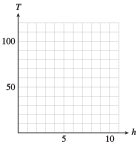 How hot is it at noon? Illustrate the answer on your graph.
When will the temperature be \(110\degree\)F? Illustrate the answer on your graph.
| \(h\) | \(0\) | \(3\) | \(6\) | \(9\) | \(10\) |
| \(T\) | \(65\) | \(80\) | \(95\) | \(110\) | \(115\) |
\(T=65+5h\)
- 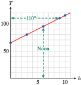
\(95\degree\)
3 p.m.
2.
The taxi out of Dulles Airport charges a traveler with one suitcase an initial fee of $\(2.00\text{,}\) plus $\(1.50\) for each mile traveled. Complete the table of values showing the charge, \(C\text{,}\) for a trip of \(n\) miles.
| \(n\) | \(0\) | \(5\) | \(10\) | \(15\) | \(20\) | \(25\) |
| \(C\) | \(\hphantom{0000}\) | \(\hphantom{0000}\) | \(\hphantom{0000}\) | \(\hphantom{0000}\) | \(\hphantom{0000}\) | \(\hphantom{0000}\) |
Write an equation for the charge, \(C\text{,}\) in terms of the number of miles traveled, \(n\text{.}\)
-
Graph the equation.

What is the charge for a trip to Mount Vernon, \(40\) miles from the airport? Illustrate the answer on your graph.
If a ride to the National Institutes of Health (NIH) costs $\(39.50\text{,}\) how far is it from the airport to the NIH? Illustrate the answer on your graph.
3.
On October 31, Betty and Paul fill their \(250\)-gallon oil tank for their heater. Beginning in November, they use an average of \(15\) gallons of oil per week. Complete the table of values for the amount of oil, \(A\text{,}\) left in the tank after \(w\) weeks.
| \(w\) | \(0\) | \(4\) | \(8\) | \(12\) | \(16\) |
| \(A\) | \(\hphantom{0000}\) | \(\hphantom{0000}\) | \(\hphantom{0000}\) | \(\hphantom{0000}\) | \(\hphantom{0000}\) |
Write an equation that expresses the amount of oil, \(A\text{,}\) in the tank in terms of the number of weeks, \(w\text{,}\) since October 31.
-
Graph the equation.
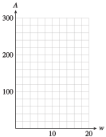 How much did the amount of fuel oil in the tank decrease between the third week and the eighth week? Illustrate this amount on the graph.
When will the tank contain more than \(175\) gallons of fuel oil? Illustrate on the graph.
| \(w\) | \(0\) | \(4\) | \(8\) | \(12\) | \(16\) |
| \(A\) | \(250\) | \(190\) | \(130\) | \(70\) | \(10\) |
\(A=250-15w\)

75 gallons
Until the fifth week
4.
Leon's camper has a \(20\)-gallon gas tank, and he gets \(12\) miles to the gallon. (That is, he uses \(\frac{1}{12}\) gallon per mile.) Complete the table of values for the amount of gas, \(g\text{,}\) left in Leon's tank after driving \(m\) miles.
| \(m\) | \(0\) | \(48\) | \(96\) | \(144\) | \(192\) |
| \(g\) | \(\hphantom{0000}\) | \(\hphantom{0000}\) | \(\hphantom{0000}\) | \(\hphantom{0000}\) | \(\hphantom{0000}\) |
Write an equation that expresses the amount of gas, \(g\text{,}\) in Leon's fuel tank in terms of the number of miles, \(m\text{,}\) he has driven.
-
Graph the equation.

How much gas will Leon use between 8 a.m., when his odometer reads \(96\) miles, and 9 a.m., when the odometer reads \(144\) miles? Illustrate on the graph.
If Leon has less than \(5\) gallons of gas left, how many miles has he driven? Illustrate on the graph.
5.
Phil and Ernie buy a used photocopier for $\(800\) and set up a copy service on their campus. For each hour that the copier runs, Phil and Ernie make $\(40\text{.}\)
Write an equation that expresses Phil and Ernie's profit (or loss), \(P\text{,}\) in terms of the number of hours, \(t\text{,}\) they run the copier.
Find the intercepts and sketch the graph. (Suggestion: Scale the horizontal axis from \(0\) to \(40\) in increments of \(5\text{,}\) and scale the vertical axis from \(-1000\) to \(400\) in increments of \(100\text{.}\))
What do the intercepts tell us about the profit?
\(P=-800+40t\)
-
\((0,-800)\text{,}\) \((20,0)\)
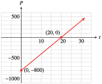 The \(P\)-intercept, \(-800\text{,}\) is the initial \((t = 0)\) value of the profit. Phil and Ernie start out \(\$800\) in debt. The \(t\)-intercept, \(20\text{,}\) is the number of hours required for Phil and Ernie to break even.
6.
A deep-sea diver is taking some readings at a depth of \(400\) feet. He begins rising at \(20\) feet per minute.
Write an equation that expresses the diver’s altitude, \(h\text{,}\) in terms of the number of minutes, \(m\text{,}\) elapsed. (Consider a depth of \(400\) feet as an altitude of \(-400\) feet.)
Find the intercepts and sketch the graph. (Suggestion: Scale the horizontal axis from \(0\) to \(24\) in increments of \(2\text{,}\) and scale the vertical axis from \(-500\) to \(100\) in increments of \(50\text{.}\))
What do the intercepts tell us about the diver's depth?
7.
There are many formulas for estimating the annual cost of driving. The Automobile Club estimates that fixed costs for a small car—including insurance, registration, depreciation, and financing—total about $\(5000\) per year. The operating costs for gasoline, oil, maintenance, tires, and so forth are about \(12.5\) cents per mile. (Source: Automobile Association of America)
Write an equation for the annual driving cost, \(C\text{,}\) in terms of \(d\text{,}\) the number of miles driven.
-
Complete the table of values.
Miles Driven \(4000\) \(8000\) \(12,000\) \(16,000\) \(20,000\) Cost ($) \(\hphantom{0000}\) \(\hphantom{0000}\) \(\hphantom{0000}\) \(\hphantom{0000}\) \(\hphantom{0000}\) Choose scales for the axes and graph the equation.
How much does the annual cost of driving increase when the mileage increases from \(8000\) to \(12,000\) miles? Illustrate this amount on the graph.
How much mileage will cause the annual cost to exceed $\(7000\text{?}\) Illustrate on the graph.
\(C=5000+0.125d\)
-
Complete the table of values.
Miles Driven \(4000\) \(8000\) \(12,000\) \(16,000\) \(20,000\) Cost ($) \(5500\) \(6000\) \(6500\) \(7000\) \(7500\) - 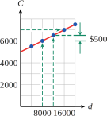
$\(500\)
More than 16,000 miles
8.
The boiling point of water changes with altitude. At sea level, water boils at \(212\degree\)F, and the boiling point diminishes by approximately \(0.002\degree\)F for each \(1\)-foot increase in altitude.
Write an equation for the boiling point, \(B\text{,}\) in terms of \(a\text{,}\) the altitude in feet.
-
Complete the table of values.
Altitude (ft) \(-500\) \(0\) \(1000\) \(2000\) \(3000\) \(4000\) \(5000\) Boiling point (\(\degree\)F) \(\hphantom{0000}\) \(\hphantom{0000}\) \(\hphantom{0000}\) \(\hphantom{0000}\) \(\hphantom{0000}\) \(\hphantom{0000}\) \(\hphantom{0000}\) Choose scales for the axes and graph the equation.
How much does the boiling point decrease when the altitude increases from \(1000\) to \(3000\) feet? Illustrate this amount on the graph.
At what altitudes is the boiling point less than \(204\degree\)F? Illustrate on the graph.
For each table, choose appropriate scales for the axes and plot the given points.
9.
| \(x\) | \(0\) | \(80\) | \(90\) | \(120\) |
| \(y\) | \(6\) | \(2\) | \(1.5\) | \(1\) |

10.
| \(x\) | \(300\) | \(500\) | \(800\) | \(1100\) |
| \(y\) | \(1.2\) | \(1.3\) | \(1.5\) | \(1.9\) |
11.
| \(x\) | \(0.01\) | \(0.03\) | \(0.06\) | \(0.07\) |
| \(y\) | \(-0.2\) | \(-1\) | \(-1.1\) | \(-2\) |

12.
| \(x\) | \(0.003\) | \(0.005\) | \(0.008\) | \(0.011\) |
| \(y\) | \(6\) | \(2\) | \(1.5\) | \(1\) |
For Problems 13-18,
Find the intercepts of the graph.
Graph the equation by the intercept method.


For Problems 19-24,
Find the intercepts of the graph.
Use the intercepts to choose scales for the axes, and then graph the equation by the intercept method.
19.
\(20x = 30y - 45,000\)
\((-2250, 0), (0, 1500)\)

20.
\(30x = 45y + 60,000\)
21.
\(0.4x + 1.2y = 4.8\)
\((12, 0), (0, 4)\)

22.
\(3.2x - 0.8y = 12.8\)
23.
\(\displaystyle{\frac{2x}{3}+ \frac{3y}{11}= 1}\)
\(\left(\dfrac{3}{2} , 0\right), \left(0, \dfrac{11}{3} \right)\)
- 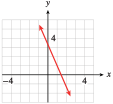
24.
\(\displaystyle{\frac{8x}{7}- \frac{2y}{7}= 1}\)
25.
The owner of a gas station has $\(19,200\) to spend on unleaded gas this month. Regular unleaded costs him $\(2.40\) per gallon, and premium unleaded costs $\(3.20\) per gallon.
How much do \(x\) gallons of regular cost? How much do \(y\) gallons of premium cost?
Write an equation in general form that relates the amount of regular unleaded gasoline, \(x\text{,}\) the owner can buy and the amount of premium unleaded, \(y\text{.}\)
Find the intercepts and sketch the graph.
What do the intercepts tell us about the amount of gasoline the owner can purchase?
$\(2.40x,\) $\(3.20y\)
\(2.40x + 3.20y = 19,200\)
- 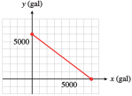
The \(y\)-intercept, \(6000\) gallons, is the amount of premium that the gas station owner can buy if he buys no regular. The \(x\)-intercept, \(8000\) gallons, is the amount of regular he can buy if he buys no premium.
26.
Five pounds of body fat is equivalent to \(16,000\) calories. Carol can burn \(600\) calories per hour bicycling and \(400\) calories per hour swimming.
How many calories will Carol burn in \(x\) hours of cycling? How many calories will she burn in \(y\) hours of swimming?
Write an equation in general form that relates the number of hours, \(x\text{,}\) of cycling and the number of hours, \(y\text{,}\) of swimming Carol needs to perform in order to lose \(5\) pounds.
Find the intercepts and sketch the graph.
What do the intercepts tell us about Carol's exercise program?
27.
Delbert must increase his daily potassium intake by \(1800\) mg. He decides to eat a combination of figs and bananas, which are both low in sodium. There are \(9\) mg potassium per gram of fig, and \(4\) mg potassium per gram of banana.
How much potassium is in \(x\) grams of fig? How much potassium is in \(y\) grams of banana?
Write an equation in general form that relates the number of grams, \(x\text{,}\) of fig and the number of grams, \(y\text{,}\) of banana Delbert needs to get \(1800\) mg of potassium.
Find the intercepts and sketch the graph.
What do the intercepts tell us about Delbert's diet?
\(9x\) mg, \(4y\) mg
\(9x + 4y = 1800\)
- 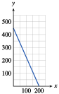
The \(x\)-intercept, \(200\) grams, tells how much fig Delbert should eat if he has no bananas, and the \(y\)-intercept, \(450\) grams, tells how much banana he should eat if he has no figs.
28.
Leslie plans to invest some money in two CD accounts. The first account pays \(3.6\%\) interest per year, and the second account pays \(2.8\%\) interest per year. Leslie would like to earn $\(500\) per year on her investment.
If Leslie invests \(x\) dollars in the first account, how much interest will she earn? How much interest will she earn if she invests \(y\) dollars in the second account?
Write an equation in general form that relates \(x\) and \(y\) if Leslie earns \(\$500\) interest.
Find the intercepts and sketch the graph.
What do the intercepts tell us about Leslie's investments?
29.
Find the intercepts of the graph for each equation.
\(\displaystyle{\frac{x}{3}+\frac{y}{5}=1} \)
\(\displaystyle{2x - 4y = 1} \)
\(\displaystyle{\frac{2x}{5}-\frac{2y}{3}=1} \)
\(\displaystyle{\frac{x}{p}+\frac{y}{q}=1} \)
\(\hphantom{00}\) e. Why is the equation \(\displaystyle{\frac{x}{a}+\frac{y}{b}=1} \) called the intercept form for a line?
\((3,0), (0,5) \)
\(\left(\dfrac{1}{2},0\right), \left(0,\dfrac{-1}{4}\right) \)
\(\left(\dfrac{5}{2},0\right), \left(0,\dfrac{-3}{2}\right) \)
\((p,0), (0,q) \)
The value of \(a\) is the \(x\)-intercept, and the value of \(b\) is the \(y\)-intercept.
30.
Write an equation in intercept form (see Problem 29) for the line with the given intercepts. Then write the equation in general form.
\((6, 0), (0, 2) \)
\((-3, 0), (0, 8) \)
\(\left(\dfrac{3}{4}, 0\right), \left(0, \dfrac{-1}{4}\right) \)
\((v, 0), (0, -w) \)
\(\left(\dfrac{1}{H}, 0\right), \left(0, \dfrac{1}{T}\right) \)
31.
Find the \(y\)-intercept of the line \(y = mx + b\text{.}\)
Find the \(x\)-intercept of the line \(y = mx + b\text{.}\)
\((0, b)\)
\(\left(\dfrac{-b}{m},0\right)\text{,}\) if \(m\ne 0\)
32.
Find the \(y\)-intercept of the line \(Ax + By = C\text{.}\)
Find the \(x\)-intercept of the line \(Ax + By = C\text{.}\)
Write an equation in general form for each line.


For Problems 37–44,
Solve each equation for \(y\) in terms of \(x\text{.}\) (See the Algebra Skills Refresher (((Unresolved xref, reference "appendix-Linear-Equations-and-Inequalities"; check spelling or use "provisional" attribute))) to review this skill.)
Graph the equation on your calculator in the specified window.
Make a pencil and paper sketch of the graph. Label the scales on your axes, and the coordinates of the intercepts.
37.
\(2+y=6\)
\(y = 6 - 2x\)

38.
\(8 - y + 3x = 0\)
39.
\(3x - 4y = 1200\)
\(y = \dfrac{3}{4}x-300\)
- 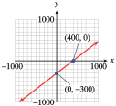
40.
\(x + 2y = 500\)
41.
\(0.2x + 5y = 0.1\)
\(y = 0.02 - 0.04x\)

42.
\(1.2x - 4.2y = 3.6\)
43.
\(70x + 3y = y + 420\)
\(y = 210 - 35x\)

44.
\(40y - 5x = 780 - 20y\)
For Problems 45–52,
Find the \(x\)- and \(y\)-intercepts.
Solve the equation for \(y\text{.}\)
Choose a graphing window in which both intercepts are visible, and graph the equation on your calculator.
45.
\(x + 4y = 100\)
\((100, 0), (0, 25)\)
\(y = 25 - \dfrac{1}{4}x\)

46.
\(2x - 3y = -72\)
47.
\(25x - 20y = 1\)
\((0.04, 0), (0, -0.05)\)
\(y = 1.25x - 0.05\)

48.
\(4x + 75y = 60,000\)
49.
\(\dfrac{y}{12} - \dfrac{x}{60}= 1\)
\((-60, 0), (0, 12)\)
\(y = 12 + \dfrac{1}{5}x\)

50.
\(\dfrac{x}{80} + \dfrac{y}{400}= 1\)
51.
\(-2x = 3y + 84\)
\((-42, 0), (0, -28)\)
\(y = \dfrac{-2}{3}x-28\)

52.
\(7x = 91 - 13y\)
Exercises 1.2 Homework 1.2
¶For which of Problems 1-6 is the second quantity a function of the first? Explain your answers.
1.
Price of an item; sales tax on the item at 4%
Function; the tax is determined by the price of the item.
2.
Time traveled at constant speed; distance traveled
3.
Number of years of education; annual income
Not a function; incomes may differ for same number of years of education.
4.
Distance flown in an airplane; price of the ticket
5.
Volume of a container of water; the weight of the water
Function; weight is determined by volume.
6.
Amount of a paycheck; amount of Social Security tax withheld
Each of the objects in Problems 7-14 establishes a correspondence between two variables. Suggest appropriate input and output variables and decide whether the relationship is a function.
7.
An itemized grocery receipt
Input: items purchased; output: price of item. Yes, a function because each item has only one price.
8.
An inventory list
9.
An index
Input: topics; output: page or pages on which topic occurs. No, not a function because the same topic may appear in more than one page.
10.
A will
11.
An instructor's grade book
Input: students’ names; output: students’ scores on quizzes, tests, etc. No, not a function because the same student can have different grades on different tests.
12.
An address book
13.
A bathroom scale
Input: person stepping on scales; output: person's weight. Yes, a function because a person cannot have two different weights at the same time.
14.
A radio dial
Which of the tables in Problems 15-26 define the second variable as a function of the first variable? Explain why or why not.
15.
| \(x\) | \(t\) |
| \(-1\) | \(2\) |
| \(0\) | \(9\) |
| \(1\) | \(-2\) |
| \(0\) | \(-3\) |
| \(-1\) | \(5\) |
No
16.
| \(y\) | \(w\) |
| \(0\) | \(8\) |
| \(1\) | \(12\) |
| \(3\) | \(7\) |
| \(5\) | \(-3\) |
| \(7\) | \(4\) |
17.
| \(x\) | \(y\) |
| \(-3\) | \(8\) |
| \(-2\) | \(3\) |
| \(-1\) | \(0\) |
| \(0\) | \(-1\) |
| \(1\) | \(0\) |
| \(2\) | \(3\) |
| \(3\) | \(8\) |
Yes
18.
| \(s\) | \(t\) |
| \(2\) | \(5\) |
| \(4\) | \(10\) |
| \(6\) | \(15\) |
| \(8\) | \(20\) |
| \(6\) | \(25\) |
| \(4\) | \(30\) |
| \(2\) | \(35\) |
19.
| \(r\) | \(-4\) | \(-2\) | \(0\) | \(2\) | \(4\) |
| \(v\) | \(6\) | \(6\) | \(3\) | \(6\) | \(8\) |
Yes
20.
| \(p\) | \(-5\) | \(-4\) | \(-3\) | \(-2\) | \(-1\) |
| \(d\) | \(-5\) | \(-4\) | \(-3\) | \(-2\) | \(-1\) |
21.
| Pressure (\(p\)) | Volume (\(v\)) |
| \(15\) | \(100.0\) |
| \(20\) | \(75.0\) |
| \(25\) | \(60.0\) |
| \(30\) | \(50.0\) |
| \(35\) | \(42.8\) |
| \(40\) | \(37.5\) |
| \(45\) | \(33.3\) |
| \(50\) | \(30.0\) |
Yes
22.
| Frequency (\(f\)) | Wavelength (\(w\)) |
| \(5\) | \(60.0\) |
| \(10\) | \(30.0\) |
| \(20\) | \(15.0\) |
| \(30\) | \(10.0\) |
| \(40\) | \(7.5\) |
| \(50\) | \(6.0\) |
| \(60\) | \(5.0\) |
| \(70\) | \(4.3\) |
23.
| Temperature (\(T\)) | Humidity (\(h\)) |
| Jan. 1 \(\hphantom{000}34\degree\)F | \(42\%\) |
| Jan. 2 \(\hphantom{000}36\degree\)F | \(44\%\) |
| Jan. 3 \(\hphantom{000}35\degree\)F | \(47\%\) |
| Jan. 4 \(\hphantom{000}29\degree\)F | \(50\%\) |
| Jan. 5 \(\hphantom{000}31\degree\)F | \(52\%\) |
| Jan. 6 \(\hphantom{000}35\degree\)F | \(51\%\) |
| Jan. 7 \(\hphantom{000}34\degree\)F | \(49\%\) |
No
24.
| Inflation rate (\(I\)) |
Unemployment rate (\(U\)) |
| 1972 \(\hphantom{000}5.6\%\) | \(5.1\%\) |
| 1973 \(\hphantom{000}6.2\%\) | \(4.5\%\) |
| 1974 \(\hphantom{000}10.1\%\) | \(4.9\%\) |
| 1975 \(\hphantom{000}9.2\%\) | \(7.4\%\) |
| 1976 \(\hphantom{000}5.8\%\) | \(6.7\%\) |
| 1977 \(\hphantom{000}5.6\%\) | \(6.8\%\) |
| 1978 \(\hphantom{000}6.7\%\) | \(7.4\%\) |
25.
| Adjusted gross income (\(I\)) |
Tax bracket (\(T\)) |
| $\(0-2479\) | \(0\%\) |
| $\(2480-3669\) | \(4.5\%\) |
| $\(3670-4749\) | \(12\%\) |
| $\(4750-7009\) | \(14\%\) |
| $\(7010-9169\) | \(15\%\) |
| $\(9170-11,649\) | \(16\%\) |
| $\(11,650-13,919\) | \(18\%\) |
Yes
26.
| Cost of merchandise (\(M\)) |
Shipping charge (\(C\)) |
| \(\$0.01-10.00\) | \(\$2.50\) |
| \(10.01-20.00\) | \(3.75\) |
| \(20.01-35.00\) | \(4.85\) |
| \(35.01-50.00\) | \(5.95\) |
| \(50.01-75.00\) | \(6.95\) |
| \(75.01-100.00\) | \(7.95\) |
| Over \(100.00\) | \(8.95\) |
27.
The function described in Problem 21 is called \(g\text{,}\) so that \(v = g( p)\text{.}\) Find the following:
\(g(25)\)
\(g(40)\)
\(x\) so that \(g(x) = 50\)
\(60\)
\(37.5\)
\(30\)
28.
The function described in Problem 22 is called \(h\text{,}\) so that \(w = h( f)\text{.}\) Find the following:
\(h(20)\)
\(h(60)\)
\(x\) so that \(h(x) = 10\)
29.
The function described in Problem 25 is called \(T\text{,}\) so that \(T = T( I)\text{.}\) Find the following:
\(T(8750)\)
\(T(6249)\)
\(x\) so that \(T(x) = 15\%\)
\(15\%\)
\(14\%\)
$7010–$9169
30.
The function described in Problem 26 is called \(C\text{,}\) so that \(C = C( M)\text{.}\) Find the following:
\(C(11.50)\)
\(C(47.24)\)
\(x\) so that \(C(x) = 7.95\)
31.
Data indicate that U.S. women are delaying having children longer than their counterparts 50 years ago. The table shows \(f(t)\) the percent of 20–24-year-old women in year \(t\) who had not yet had children. (Source: U.S. Dept of Health and Human Services)
| Year (\(t\)) | \(1960\) | \(1965\) | \(1970\) | \(1975\) | \(1980\) | \(1985\) | \(1990\) | \(1995\) | \(2000\) |
| Percent of women |
\(47.5\) | \(51.4\) | \(47.0\) | \(62.5\) | \(66.2\) | \(67.7\) | \(68.3\) | \(65.5\) | \(66.0\) |
Evaluate \(f (1985)\) and explain what it means.
Estimate a solution to the equation \(f (t) = 68\) and explain what it means.
In 1997, \(64.9\%\) of 20–24-year-old women had not yet had children. Write an equation with function notation that states this fact.
\(67.7\text{:}\) In 1985, \(67.7\%\) of 20–24 year old women had not yet had children.
1987: Approximately \(68\%\) of 20–24 year old women had not yet had children in 1987.
\(f (1997) = 64.9\)
32.
The table shows \(f (t)\text{,}\) the death rate (per 100,000 people) from HIV among 15–24-year-olds, and \(g(t)\text{,}\) the death rate from HIV among 25–34-year-olds, for selected years from 1997 to 2002. (Source: U.S. Dept of Health and Human Services)
| Year | \(1987\) | \(1988\) | \(1989\) | \(1990\) | \(1992\) | \(1994\) | \(1996\) | \(1998\) | \(2000\) | \(2002\) |
| 15–24-year-olds | \(1.3\) | \(1.4\) | \(1.6\) | \(1.5\) | \(1.6\) | \(1.8\) | \(1.1\) | \(0.6\) | \(0.5\) | \(0.4\) |
| 25–34-year-olds | \(11.7\) | \(14.0\) | \(17.9\) | \(19.7\) | \(24.2\) | \(28.6\) | \(19.2\) | \(8.1\) | \(6.1\) | \(4.6\) |
Evaluate \(f (1995)\) and explain what it means.
Find a solution to the equation \(g (t) = 28.6\) and explain what it means.
In 1988, the death rate from HIV for 25–34-year-olds was \(10\) times the corresponding rate for 15–24-year-olds. Write an equation with function notation that states this fact.
33.
When you exercise, your heart rate should increase until it reaches your target heart rate. The table shows target heart rate, \(r = f (a)\text{,}\) as a function of age.
| \(a\) | \(20\) | \(25\) | \(30\) | \(35\) | \(40\) | \(45\) | \(50\) | \(55\) | \(60\) | \(65\) | \(70\) |
| \(r\) | \(150\) | \(146\) | \(142\) | \(139\) | \(135\) | \(131\) | \(127\) | \(124\) | \(120\) | \(116\) | \(112\) |
Does \(f (50) = 2 f (25)\text{?}\)
Find a value of a for which \(f (a) = 2a\text{.}\) Is \(f (a) = 2a\) for all values of \(a\text{?}\)
Is \(r = f (a)\) an increasing function or a decreasing function?
No
60; no
Decreasing
34.
The table shows \(M = f (d)\text{,}\) the men's Olympic record time, and \(W = g(d)\text{,}\) the women's Olympic record time, as a function of the length, \(d\text{,}\) of the race. For example, the women’s record in the 100 meters is 10.62 seconds, and the men’s record in the 800 meters is 1 minute, 42.58 seconds. (Source: www.hickoksports.com)
| Distance (meters) |
\(100\) | \(200\) | \(400\) | \(800\) | \(1500\) | \(5000\) | \(10,000\) |
| Men | \(9.63\) | \(19.30\) | \(43.03\) | \(1:40.91\) | \(3:32.07\) | \(12:57.82\) | \(27:01.17\) |
| Women | \(10.62\) | \(21.34\) | \(48.25\) | \(1:53.43\) | \(3:53.96\) | \(14:26.17\) | \(29:17.45\) |
Does \(f (800) = 2 f (400)\text{?}\) Does \(g(400) = 2g(200)\text{?}\)
Find a value of \(d\) for which \(f (2d)\lt 2f (d)\text{.}\) Is there a value of \(d\) for which \(g(2d)\lt 2g(d)\text{?}\)
In Problems 35—40, use the graph of the function to answer the questions.
35.
The graph shows \(C\) as a function of \(t\text{.}\) \(C\) stands for the number of students (in thousands) at State University who consider themselves computer literate, and \(t\) represents time, measured in years since 1990.

When did \(2000\) students consider themselves computer literate?
How long did it take that number to double?
How long did it take for the number to double again?
How many students became computer literate between January 1992 and June 1993?
1991
1 yr
1 yr
About 7300
36.
The graph shows \(P\) as a function of \(t\text{.}\) \(P\) is the number of people in Cedar Grove who owned a portable DVD player \(t\) years after 2000.
When did 3500 people own portable DVD players?
How many people owned portable DVD players in 2005?
The number of owners of portable DVD players in Cedar Grove seems to be leveling off at what number?
How many people acquired portable DVD players between 2001 and 2004?
37.
The graph shows the revenue, \(R\text{,}\) a movie theater collects as a function of the price, \(d\text{,}\) it charges for a ticket.
What is the revenue if the theater charges $\(12.00\) for a ticket?
What should the theater charge for a ticket in order to collect $\(1500\) in revenue?
For what values of \(d\) is \(R\gt 1875\text{?}\)
Approximately $\(1920\)
$\(5\) or $\(15\)
\(7.50\lt d\lt 12.50\)
38.
The graph shows \(S\) as a function of \(w\text{.}\) \(S\) represents the weekly sales of a best-selling book, in thousands of dollars, \(w\) weeks after it is released.

In which weeks were sales over $\(7000\text{?}\)
In which week did sales fall below $\(5000\) on their way down?
For what values of \(w\) is \(S\gt 3.4\text{?}\)
39.
The graph shows the federal minimum wage, \(M\text{,}\) as a function of time, \(t\text{,}\) adjusted for inflation to reflect its buying power in 2004 dollars. (Source: www.infoplease.com)

When did the minimum wage reach its highest buying power, and what was it worth in 2004 dollars?
When did the minimum wage fall to its lowest buying power after its peak, and what was its worth at that time?
Give two years in which the minimum wage was worth $\(8\) in 2004 dollars.
1968, about $\(8.70\)
1989, about $\(5.10\)
1967, approximately 1970
40.
The graph shows the U.S. unemployment rate, \(U\text{,}\) as a function of time, \(t\text{,}\) for the years 1985–2004. (Source: U.S. Bureau of Labor Statistics)

When did the unemployment rate reach its highest value, and what was its highest value?
When did the unemployment rate fall to its lowest value, and what was its lowest value?
Give two years in which the unemployment rate was \(4.5\%\text{.}\)
In Problems 41–48, evaluate each function for the given values.
41.
\(f (x) = 6 - 2x\)
\(f(3)\)
\(f(-2)\)
\(f(12.7)\)
\(f\left(\dfrac{2}{3}\right)\)
\(0\)
\(10\)
\(-19.4\)
\(\dfrac{14}{3} \)
42.
\(g(t) = 5t - 3\)
\(g(1)\)
\(g(-4)\)
\(g(14.1)\)
\(g\left(\dfrac{3}{4}\right)\)
43.
\(h(v) = 2v^2 - 3v + 1\)
\(h(0)\)
\(h(-1)\)
\(h\left(\dfrac{1}{4}\right)\)
\(h(-6.2)\)
\(1\)
\(6\)
\(\dfrac{3}{8}\)
\(96.48 \)
44.
\(r (s) = 2s - s^2\)
\(r(2)\)
\(r(-4)\)
\(r\left(\dfrac{1}{3}\right)\)
\(r(-1.3)\)
45.
\(H(z) = \dfrac{2z - 3}{z + 2}\)
\(H(4)\)
\(H(-3)\)
\(H\left(\dfrac{4}{3}\right)\)
\(H(4.5)\)
\(\dfrac{5}{6} \)
\(9\)
\(\dfrac{-1}{10}\)
\(\dfrac{12}{13}\approx 0.923 \)
46.
\(F(x) = \dfrac{1-x}{2x-3}\)
\(F(0)\)
\(F(-3)\)
\(F\left(\dfrac{5}{2}\right)\)
\(F(9.8)\)
47.
\(E(t) =\sqrt{t-4}\)
\(E(16)\)
\(E(4)\)
\(E(7)\)
\(E(4.2)\)
\(\sqrt{12} \)
\(0\)
\(\sqrt{3}\)
\(\sqrt{0.2}\approx 0.447 \)
48.
\(D(r) =\sqrt{5-r}\)
\(D(4)\)
\(D(-3)\)
\(D(-9)\)
\(D(4.6)\)
49.
A sport utility vehicle costs $\(28,000\) and depreciates according to the formula
where \(V\) is the value of the vehicle after \(t\) years.
Evaluate \(V(12)\) and explain what it means.
Solve the equation \(V(t) = 0\) and explain what it means.
If this year is \(t = n\text{,}\) what does \(V(n + 2)\) mean?
\(V(12) = 1120\text{:}\) After 12 years, the SUV is worth $\(1120\text{.}\)
\(t = 12.5\text{:}\) The SUV has zero value after \(12\frac{1}{2}\) years.
The value 2 years later
50.
In a profit-sharing plan, an employee receives a salary of
where \(x\) represents the company's profit for the year.
Evaluate \(S(850,000)\) and explain what it means.
Solve the equation \(S(x) = 30,000\) and explain what it means.
If the company made a profit of \(p\) dollars this year, what does \(S(2p)\) mean?
51.
The number of compact cars that a large dealership can sell at price \(p\) is given by
Evaluate \(N(6000)\) and explain what it means.
As \(p\) increases, does \(N(p)\) increase or decrease? Why is this reasonable?
If the current price for a compact car is \(D\text{,}\) what does \(2N(D)\) mean?
\(N(6000) = 2000\text{:}\) \(2000\) cars will be sold at a price of $\(6000\text{.}\)
\(N(p)\) decreases with increasing \(p\) because fewer cars will be sold when the price increases.
\(2N(D)\) represents twice the number of cars that can be sold at the current price.
52.
A department store finds that the market value of its Christmas-related merchandise is given by
where \(t\) is the number of weeks after Christmas.
Evaluate \(M(2)\) and explain what it means.
As \(t\) increases, does \(M(t)\) increase or decrease? Why is this reasonable?
If this week \(t = n\text{,}\) what does \(M(n + 1)\) mean?
53.
The velocity of a car that brakes suddenly can be determined from the length of its skid marks, \(d\text{,}\) by
where \(d\) is in feet and \(v\) is in miles per hour.
Evaluate \(v(250)\) and explain what it means.
Estimate the length of the skid marks left by a car traveling at \(100\) miles per hour.
Write your answer to part (b) with function notation.
\(v(250) = 54.8\) is the speed of a car that left \(250\)-foot skid marks.
\(833\dfrac{1}{3}\) feet
\(v\left(833\dfrac{1}{3}\right)= 100\)
54.
The distance, \(d\text{,}\) in miles that a person can see on a clear day from a height, \(h\text{,}\) in feet is given by
Evaluate \(d(20,320)\) and explain what it means.
Estimate the height you need in order to see \(100\) miles.
Write your answer to part (b) with function notation.
55.
The figure gives data about snowfall, air temperature, and number of avalanches on the Mikka glacier in Sarek, Lapland, in 1957. (Source: Leopold, Wolman, Miller, 1992)
During June and July, avalanches occurred over three separate time intervals. What were they?
Over what three time intervals did snow fall?
When was the temperature above freezing (\(0\degree\)C)?
Using your answers to parts (a)–(c), make a conjecture about the conditions that encourage avalanches.
June 21–24, June 29–July 3, July 8–14
June 17–21, June 25–29, July 4–7
June 22–24, June 27, June 29–July 4, July 8–14
Avalanches occur when temperatures rise above freezing immediately after snowfall.
56.
The bar graph shows the percent of Earth's surface that lies at various altitudes or depths below the surface of the oceans. (Depths are given as negative altitudes.) (Source: Open University)

-
Read the graph and complete the table.
Altitude (km) Percent of
Earth's surface\(-7\) to \(-6\) \(\) \(-6\) to \(-5\) \(\) \(-5\) to \(-4\) \(\) \(-4\) to \(-3\) \(\) \(-3\) to \(-2\) \(\) \(-2\) to \(-1\) \(\) \(-1\) to \(0\) \(\) \(0\) to \(1\) \(\) \(1\) to \(2\) \(\) \(2\) to \(3\) \(\) \(3\) to \(4\) \(\) \(4\) to \(5\) \(\) What is the most common altitude? What is the second most common altitude??
Approximately what percent of the Earth's surface is below sea level?
The height of Mt. Everest is \(8.85\) kilometers. Can you think of a reason why it is not included in the graph?
57.
The graph shows the temperature of the ocean at various depths. (Source: Open University)
Is depth a function of temperature?
Is temperature a function of depth?
The axes are scaled in an unusual way. Why is it useful to present the graph in this way?
No
Yes
Moving downwards on the graph corresponds to moving downwards in the ocean.
58.
The graph shows the relationship between annual precipitation, \(p\text{,}\) in a region and the amount of erosion, measured in tons per square mile, \(s\text{.}\) (Source: Leopold, Wolman, Miller, 1992)

Is the amount of erosion a function of the amount of precipitation?
At what annual precipitation is erosion at a maximum, and what is that maximum?
Over what interval of annual precipitation does erosion decrease?
-
An increase in vegetation inhibits erosion, and precipitation encourages vegetation. What happens to the amount of erosion as precipitation increases in each of these three environments?
desert shrub: \(0\lt p\lt 12\) grassland: \(12\lt p\lt 30\) forest: \(30\lt p\lt 60\)
In Problems 59—64, evaluate the function and simplify.
59.
\(G(s) = 3s^2 - 6s\)
\(G(3a)\)
\(G(a + 2)\)
\(G(a) + 2\)
\(G(-a)\)
\(27a^2 - 18a\)
\(3a^2 + 6a\)
\(3a^2 - 6a + 2\)
\(3a^2 + 6a \)
60.
\(h(x) = 2x^2 + 6x - 3\)
\(h(2a)\)
\(h(a + 3)\)
\(h(a) + 3\)
\(h(-a)\)
61.
\(g(x) = 8\)
\(g(2)\)
\(g(8)\)
\(g(a + 1)\)
\(g(-x)\)
\(8\)
\(8\)
\(8\)
\(8 \)
62.
\(f (t) = -3\)
\(f (4)\)
\(f (-3)\)
\(f (b - 2)\)
\(f (-t)\)
63.
\(P(x) = x^3 - 1\)
\(P(2x)\)
\(2P(x)\)
\(P(x^2)\)
\([P(x)]^2\)
\(8x^3 - 1\)
\(2x^3 - 2\)
\(x^6 - 1\)
\(x^6 - 2x^3 + 1 \)
64.
\(Q(t) = 5t^3\)
\(Q(2t)\)
\(2Q(t)\)
\(Q(t^2)\)
\([Q(t)]^2\)
In Problems 65—68, evaluate the function for the given expressions and simplify.
65.
\(f (x) = x^3\)
\(f (a^2)\)
\(a^3 \cdot f (a^3)\)
\(f (ab)\)
\(f (a + b)\)
\(a^6\)
\(a^{12}\)
\(a^3b^3\)
\(a^3 + 3a^2b + 3ab^2 + b^3 \)
66.
\(g(x) = x^4\)
\(g(a^3)\)
\(a^4\cdot g(a^4)\)
\(g(ab)\)
\(g(a + b)\)
67.
\(F(x) = 3x^5\)
\(F(2a)\)
\(2 F(a)\)
\(F(a^2)\)
\([F(a)]^2\)
\(96a^5\)
\(6a^5\)
\(3a^{10}\)
\(9a^{10} \)
68.
\(G(x) = 4x^3\)
\(G(3a)\)
\(3G(a)\)
\(G(a^4)\)
\([G(a)]^4\)
For the functions in Problems 69–76, compute the following:
\(f (2) + f (3)\)
\(f (2 + 3)\)
\(f (a) + f (b)\)
\(f (a + b)\)
For which functions does \(f (a + b) = f (a) + f (b)\) for all values of \(a\) and \(b\text{?}\)
69.
\(f (x) = 3x - 2\)
\(11\)
\(13\)
\(3a + 3b - 4\)
\(3a + 3b - 2 \)
This function does NOT satisfy \(f (a + b) = f (a) + f (b)\text{.}\)
70.
\(f (x) = 1 - 4x\)
71.
\(f (x) = x^2 + 3\)
\(19\)
\(28\)
\(a^2 + b^2 + 6\)
\(a^2 + 2ab + b^2 + 3 \)
This function does NOT satisfy \(f (a + b) = f (a) + f (b)\text{.}\)
72.
\(f (x) = x^2 - 1\)
73.
\(f (x) =\sqrt{x+1} \)
\(\sqrt{3}+2 \)
\(\sqrt{6} \)
\(\sqrt{a+1}+\sqrt{b+1} \)
\(\sqrt{a+b+1} \)
This function does NOT satisfy \(f (a + b) = f (a) + f (b)\text{.}\)
74.
\(f (x) = \sqrt{6-x}\)
75.
\(f (x) =\dfrac{-2}{x} \)
\(\dfrac{-5}{3} \)
\(\dfrac{-2}{5} \)
\(\dfrac{-2}{a}-\dfrac{-2}{b} \)
\(\dfrac{-2}{a+b} \)
This function does NOT satisfy \(f (a + b) = f (a) + f (b)\text{.}\)
76.
\(f (x) = \dfrac{3}{x}\)
77.
Use a table of values to estimate a solution to
as follows:
-
Make a table starting at \(x = 0\) and increasing by \(\Delta x = 10\text{,}\) as shown in the accompanying tables. Find two \(x\)-values \(a\) and \(b\) so that \(f (a)\gt 500\gt f (b)\text{.}\)
\(x\) \(0\) \(10\) \(20\) \(30\) \(40\) \(50\) \(60\) \(70\) \(80\) \(90\) \(100\) \(f(x)\) \(\) \(\) \(\) \(\) \(\) \(\) \(\) \(\) \(\) \(\) \(\) Make a new table starting at \(x = a\) and increasing by \(\Delta x = 1\text{.}\) Find two \(x\)-values, \(c\) and \(d\text{,}\) so that \(f (c)\gt 500\gt f (d)\text{.}\)
Make a new table starting at \(x = c\) and increasing by \(\Delta x = 0.1\text{.}\) Find two \(x\)-values, \(p\) and \(q\text{,}\) so that \(f (p)\gt 500\gt f (q)\text{.}\)
Take the average of \(p\) and \(q\text{,}\) that is, set \(s = \dfrac{p + q}{2}\text{.}\) Then \(s\) is an approximate solution that is off by at most \(0.05\text{.}\)
Evaluate \(f (s)\) to check that the output is approximately \(500\text{.}\)
-
\(x\) \(0\) \(10\) \(20\) \(30\) \(40\) \(50\) \(60\) \(70\) \(80\) \(90\) \(f(x)\) \(800\) \(840\) \(840\) \(800\) \(720\) \(600\) \(440\) \(240\) \(0\) \(-280\) \(-600\) \(a = 50\) and \(b = 60\)
-
\(x\) \(50\) \(51\) \(52\) \(53\) \(54\) \(55\) \(56\) \(57\) \(58\) \(f(x)\) \(600\) \(585.8\) \(571.2\) \(556.2\) \(540.8\) \(525\) \(508.8\) \(492.2\) \(475.2\) \(c = 56\) and \(d = 57\)
-
\(x\) \(56\) \(56.1\) \(56.2\) \(56.3\) \(56.4\) \(56.5\) \(56.6\) \(f(x)\) \(508.8\) \(507.158\) \(505.512\) \(503.862\) \(502.208\) \(500.55\) \(498.888\) \(p = 56.5\) and \(q = 56.6\)
\(s = 56.55\)
\(f (56.55) = 499.7195\)
78.
Use a table of values to estimate a solution to
as follows:
-
Make a table starting at \(x = 0\) and increasing by \(\Delta x = 10\text{,}\) as shown in the accompanying tables. Find two \(x\)-values \(a\) and \(b\) so that \(f (a)\lt 18,000\lt f (b)\text{.}\)
\(x\) \(0\) \(10\) \(20\) \(30\) \(40\) \(50\) \(60\) \(70\) \(80\) \(90\) \(100\) \(f(x)\) \(\) \(\) \(\) \(\) \(\) \(\) \(\) \(\) \(\) \(\) \(\) Make a new table starting at \(x = a\) and increasing by \(\Delta x = 1\text{.}\) Find two \(x\)-values, \(c\) and \(d\text{,}\) so that \(f (c)\lt 18,000\lt f (d)\text{.}\)
Make a new table starting at \(x = c\) and increasing by \(\Delta x = 0.1\text{.}\) Find two \(x\)-values, \(p\) and \(q\text{,}\) so that \(f (p)\lt 18,000\lt f (q)\text{.}\)
Take the average of \(p\) and \(q\text{,}\) that is, set \(s = \dfrac{p + q}{2}\text{.}\) Then \(s\) is an approximate solution that is off by at most \(0.05\text{.}\)
Evaluate \(f (s)\) to check that the output is approximately \(18,000\text{.}\)
79.
Use tables of values to estimate the positive solution to
accurate to within \(0.05\text{.}\)
\(94.85\)
80.
Use tables of values to estimate the positive solution to
accurate to within \(0.05\text{.}\)
Exercises 1.3 Homework 1.3
¶In Problems 1–8, use the graphs to answer the questions about the functions.
1.
Find \(h(-3)\text{,}\) \(h(1)\text{,}\) and \(h(3)\text{.}\)
For what value(s) of \(z\) is \(h(z) = 3\text{?}\)
Find the intercepts of the graph. List the function values given by the intercepts.
What is the maximum value of \(h(z)\text{?}\)
For what value(s) of \(z\) does \(h\) take on its maximum value?
On what intervals is the function increasing? Decreasing?

- \(\displaystyle -2, 0,5\)
- \(\displaystyle 2\)
- \(\displaystyle h(-2)=0,~h(1)=0,~h(0)=-2\)
- \(\displaystyle 5\)
- \(\displaystyle 3\)
Increasing: \((-3,0)\) and \((1,3)\text{;}\) decreasing: \((0,1)\) and \((3,5)\)
2.
Find \(G(-3)\text{,}\) \(G(-1)\text{,}\) and \(G(2)\text{.}\)
For what value(s) of \(s\) is \(G(s) = 3\text{?}\)
Find the intercepts of the graph. List the function values given by the intercepts.
What is the minimum value of \(G(s)\text{?}\)
For what value(s) of \(s\) does \(G\) take on its minimum value?
On what intervals is the function increasing? Decreasing?

3.
Find \(R(1)\) and \(R(3)\text{.}\)
For what value(s) of \(p\) is \(R(p)=2\text{?}\)
Find the intercepts of the graph. List the function values given by the intercepts.
Find the maximum and minimum values of \(R(p)\text{.}\)
For what value(s) of \(p\) does \(R\) take on its maximum and minimum values?
On what intervals is the function increasing? Decreasing?

\(-1, 2\)
\(3, -1.3\)
\(R(-2) = 0\text{,}\) \(R(2) = 0\text{,}\) \(R(4) = 0\text{,}\) \(R(0) = 4\)
Max: \(4\text{;}\) min: \(-5\)
Max at \(p = 0\text{;}\) min at \(p = 5\)
Increasing: \((-3, 0)\) and \((1, 3)\text{;}\) decreasing: \((0, 1)\) and \((3, 5)\)
4.
Find \(f (-1)\) and \(f (3)\text{.}\)
For what value(s) of \(t\) is \(f(t)=5\text{?}\)
Find the intercepts of the graph. List the function values given by the intercepts.
Find the maximum and minimum values of \(f(t)\text{.}\)
For what value(s) of \(t\) does \(f\) take on its maximum and minimum values?
On what intervals is the function increasing? Decreasing?

5.
Find \(S(0)\text{,}\) \(S\left(\dfrac{1}{6}\right)\text{,}\) and \(S(-1)\text{.}\)
Estimate the value of \(S\left(\dfrac{1}{3}\right)\) from the graph.
For what value(s) of \(x\) is \(S(x) = -\dfrac{1}{2}\text{?}\)
Find the maximum and minimum values of \(S(x)\text{.}\)
For what value(s) of \(x\) does \(S\) take on its maximum and minimum values?

\(0, \dfrac{1}{2}, 0\)
\(0.9\)
\(\dfrac{-5}{6}\text{,}\) \(\dfrac{-1}{6}\text{,}\) \(\dfrac{7}{6}\text{,}\) \(\dfrac{11}{6}\)
Max: \(1\text{;}\) min: \(-1\)
Max at \(x=-1.5, 0.5\text{;}\) min at \(x=-0.5, 1.5\)
6.
Find \(C(0)\text{,}\) \(C\left(-\dfrac{1}{3}\right)\text{,}\) and \(C(1)\text{.}\)
Estimate the value of \(C\left(\dfrac{1}{6}\right)\) from the graph.
For what value(s) of \(x\) is \(C(x) = \dfrac{1}{2}\text{?}\)
Find the maximum and minimum values of \(C(x)\text{.}\)
For what value(s) of \(x\) does \(C\) take on its maximum and minimum values?

7.
Find \(F(-3)\text{,}\) \(F(-2)\text{,}\) and \(F(2)\text{.}\)
For what value(s) of \(s\) is \(F(s) = -1\text{?}\)
Find the maximum and minimum values of \(F(s)\text{.}\)
For what value(s) of \(s\) does \(F\) take on its maximum and minimum values?

\(2, 2, 1\)
\(-6 \le s \lt -4~\) or \(~0\le s\lt 2\)
Max: \(2\text{;}\) min: \(-1\)
Max for \(-3\le s\lt -1~\) or \(~3\le s\lt 5\text{;}\) min for \(-6\le s\lt -4~\) or \(~0\le s\lt 2\)
8.
Find \(P(-3)\text{,}\) \(P(-2)\text{,}\) and \(P(1)\text{.}\)
For what value(s) of \(n\) is \(P(n) = 0\text{?}\)
Find the maximum and minimum values of \(P(n)\text{.}\)
For what value(s) of \(n\) does \(P\) take on its maximum and minimum values?

Which of the graphs in Problems 9 and 10 represent functions?
9.

(a) and (d)
10.

In Problems 11–16,
Make a table of values and sketch a graph of the function by plotting points. (Use the suggested \(x\)-values.)
Use your calculator to graph the function.
Compare the calculator's graph with your sketch.
11.
\(g(x) = x^3 + 4\text{;}\) \(\hphantom{00000}x = -2, -1, \ldots , 2\)

12.
\(h(x) = 2 +\sqrt{x}\text{;}\) \(\hphantom{00000}x = 0,1, \ldots , 9\)
13.
\(G(x) =\sqrt{4 - x}\text{;}\) \(\hphantom{00000}x = -5, -4, \ldots , 4\)

14.
\(F(x) = \sqrt{x-1}\text{;}\) \(\hphantom{00000}x = 1,2, \ldots , 10\)
15.
\(v(x) = 1 + 6x - x^3\text{;}\) \(\hphantom{00000}x = -3, -2, \ldots , 3\)

16.
\(w(x) = x^3 - 8x\text{;}\) \(\hphantom{00000}x = -4, -3, \ldots , 4\)
17.
The graph shows the speed of sound in the ocean as a function of depth, \(S = f (d)\text{.}\) The speed of sound is affected both by increasing water pressure and by dropping temperature. (Source: Scientific American)

Evaluate \(f (1000)\) and explain its meaning.
Solve \(f (d) = 1500\) and explain its meaning.
At what depth is the speed of sound the slowest, and what is the speed? Write your answer with function notation.
Describe the behavior of \(f (d)\) as \(d\) increases.
\(f (1000) = 1495\text{:}\) The speed of sound at a depth of \(1000\) meters is approximately \(1495\) meters per second.
\(d = 570\) or \(d = 1070\text{:}\) The speed of sound is \(1500\) meters per second at both a depth of \(570\) meters and a depth of \(1070\) meters.
The slowest speed occurs at a depth of about \(810\) meters and the speed is about \(1487\) meters per second, so \(f (810) = 1487\text{.}\)
\(f\) increases from about \(1533\) to \(1541\) in the first \(110\) meters of depth, then drops to about \(1487\) at \(810\) meters, then rises again, passing \(1553\) at a depth of about \(1600\) meters.
18.
The graph shows the water level in Lake Superior as a function of time, \(L = f (t)\text{.}\) (Source: The Canadian Hydrographic Service)

Evaluate \(f (1997)\) and explain its meaning.
Solve \(f (t) = 183.5\) and explain its meaning.
In which two years did Lake Superior reach its highest levels, and what were those levels? Write your answers with function notation.
Over which two-year period did the water level drop the most?
19.
The graph shows the federal debt as a percentage of the gross domestic product (GDP), as a function of time, \(D = f (t)\text{.}\) (Source: Office of Management and Budget)
Evaluate \(f (1985)\) and explain its meaning.
Solve \(f (t) = 70\) and explain its meaning.
When did the federal debt reach its highest level since 1960, and what was that level? Write your answer with function notation.
What is the longest time interval over which the federal debt was decreasing?
\(f(1985)=41\text{:}\) The federal debt in \(1985\) was about \(41\%\) of the gross domestic product.
\(t = 1942\) or \(t = 1955\text{:}\) The federal debt was \(70\%\) of the gross domestic product in \(1942\) and \(1955\text{.}\)
In about \(1997\text{,}\) the debt was about \(67\%\) of the gross domestic product, so \(f (1997)\approx 67.3\text{.}\)
The percentage basically dropped from 1946 to 1973, but there were small rises around 1950, 1954, 1958, and 1968, so the longest time interval was from 1958 to 1967.
20.
The graph shows the elevation of the Los Angeles Marathon course as a function of the distance into the race, \(a = f (t)\text{.}\) (Source: Los Angeles Times, March 3, 2005)

Evaluate \(f (5)\) and explain its meaning.
Solve \(f (d) = 200\) and explain its meaning.
When does the marathon course reach its lowest elevation, and what is that elevation? Write your answer with function notation.
Give three intervals over which the elevation is increasing.
21.
The figure shows a graph of \(y = -2x + 6\text{.}\)

-
Use the graph to find all values of \(x\) for which
\(y=12\)
\(y\gt 12\)
\(y\lt 12\)
-
Use the graph to solve
\(-2x + 6=12\)
\(-2x + 6\gt 12\)
\(-2x + 6\lt 12\)
Explain why your answers to parts (a) and (b) are the same.
\(x = -3\)
\(x\lt -3\)
\(x\gt -3\)
\(x = -3\)
\(x\lt -3\)
\(x\gt -3\)
On the graph of \(y=-2x + 6\text{,}\) a value of \(y\) is the same as a value of \(-2x + 6\text{,}\) so parts (a) and (b) are asking for the same \(x\)'s.
22.
The figure shows a graph of \(y =\dfrac{-x}{3} - 6\text{.}\)

-
Use the graph to find all values of \(x\) for which
\(y=-4\)
\(y\gt -4\)
\(y\lt -4\)
-
Use the graph to solve
\(\dfrac{-x}{3} - 6=-4\)
\(\dfrac{-x}{3} - 6\gt -4\)
\(\dfrac{-x}{3} - 6\lt -4\)
Explain why your answers to parts (a) and (b) are the same.
In Problems 23 and 24, use the graph to solve the equation or inequality, and then solve algebraically. (To review solving linear inequalities algebraically, see (((Unresolved xref, reference "appendix-Linear-Equations-and-Inequalities"; check spelling or use "provisional" attribute)))Algebra Skills Refresher .)
23.
The figure shows the graph of \(y = 1.4x - 0.64\text{.}\) Solve the following:

\(1.4x - 0.64 = 0.2\)
\(-1.2 = 1.4x - 0.64\)
\(1.4x - 0.64\gt 0.2\)
\(-1.2\gt 1.4x - 0.64\)
\(x = 0.6\)
\(x=-0.4\)
\(x\gt 0.6\)
\(x\lt -0.4\)
24.
The figure shows the graph of \(y = -2.4x + 2.32\text{.}\) Solve the following:

\(1.6 = -2.4x + 2.32\)
\(-2.4x + 2.32 = 0.4\)
\(-2.4x + 2.32\ge 1.6\)
\(0.4\ge -2.4x + 2.32\)
For Problems 25–30, use the graphs to estimate solutions to the equations and inequalities.
25.
The figure shows the graph of \(g(x) = \dfrac{12}{2 + x^2}\text{.}\)

Solve \(\dfrac{12}{2 + x^2} = 4\)
Solve \(1\le \dfrac{12}{2 + x^2} \le 2\)
\(x=-1\) or \(x = 1\)
Approximately \(-3\le x\le -2\) or \(2\le x\le 3\)
26.
The figure shows the graph of \(f(x) = \dfrac{30\sqrt{x}}{1 + x}\text{.}\)
Solve \(\dfrac{30\sqrt{x}}{1 + x} = 15\)
Solve \(\dfrac{30\sqrt{x}}{1 + x} \lt 12\)
27.
The figure shows a graph of \(B = \dfrac{1}{3}p^3 - 3p + 2\text{.}\)
Solve \(\dfrac{1}{3}p^3 - 3p + 2 = 6\)
Solve \(\dfrac{1}{3}p^3 - 3p + 2=5\)
Solve \(\dfrac{1}{3}p^3 - 3p + 2\lt 1\)
What range of values does \(B\) have for \(p\) between \(-2.5\) and \(0.5\text{?}\)
For what values of \(p\) is \(B\) increasing?
\(3.5\)
\(-2.2, -1.2, 3.4\)
\(p\lt -3.1\) or \(0.3\lt p\lt 2.8\)
\(0.5\lt B\lt 5.5\)
\(p\lt -1.7\) or \(p\gt 1.7\)
28.
The figure shows a graph of \(H = t^3 - 4t^2 - 4t + 12\text{.}\)
Solve \(t^3 - 4t^2 - 4t + 12 = -4\)
Solve \(t^3 - 4t^2 - 4t + 12=16\)
Solve \(t^3 - 4t^2 - 4t + 12\gt 6\)
Estimate the horizontal and vertical intercepts of the graph.
For what values of \(t\) is \(H\) increasing?
29.
The figure shows a graph of \(M = g(q)\text{.}\)

-
Find all values of \(q\) for which
\(g(q) = 0\)
\(g(q) = 16\)
\(g(q)\lt 6\)
For what values of \(q\) is \(g(q)\) increasing?
\(-2, 2\)
\(-2.8, 0, 2.8\)
\(-2.5\lt q\lt-1.25\) or \(1.25\lt q\lt 2.5\)
\(-2 \lt q\lt 0\) or \(q\gt 2\)
30.
The figure shows a graph of \(P = f (t)\text{.}\)
-
Find all values of \(t\) for which
\(f (t) = 3\)
\(f (t)\gt 4.5\)
\(2\le f (t)\le 4\)
For what values of \(t\) is \(f (t)\) decreasing?
31.
-
Delbert reads the following values from the graph of a function:
\begin{equation*} f (-3) = 5, ~f (-1) = 2, ~f (1) = 0, \end{equation*}\begin{equation*} f (-1) = -4, ~f (-3) = -2 \end{equation*}Can his readings be correct? Explain why or why not.
-
Francine reads the following values from the graph of a function:
\begin{equation*} g(-2) = 6, ~g(0) = 0, ~g(2) = 6, \end{equation*}\begin{equation*} g(4) = 0, ~g(6) = 6 \end{equation*}Can her readings be correct? Explain why or why not.
He has an error: \(f(-3)\) cannot have both the value \(5\) and also the value \(-2\text{,}\) and \(f(-1)\) cannot have both values \(2\) and \(-4\text{.}\)
Her readings are possible for a function: each input has only one output.
32.
-
Sketch the graph of a function that has the following values:
\begin{equation*} F(-2) = 3, ~F(-1) = 3, ~F(0) = 3, \end{equation*}\begin{equation*} F(1) = 3, ~F(2) = 3 \end{equation*} -
Sketch the graph of a function that has the following values:
\begin{equation*} G(-2) = 1, ~G(-1) = 0, ~G(0) = -1, \end{equation*}\begin{equation*} G(1) = 0, ~G(2) = 1 \end{equation*}
For Problems 33–36, graph each function in the friendly window
Then answer the questions about the graph. (See (((Unresolved xref, reference "appendix-b"; check spelling or use "provisional" attribute))) for an explanation of friendly windows.)
33.
\(g(x) =\sqrt{36 - x^2}\)
-
Complete the table. (Round values to tenths.)
\(x\) \(-4\) \(-2\) \(3\) \(5\) \(g(x)\) \(\hphantom{000}\) \(\hphantom{000}\) \(\hphantom{000}\) \(\hphantom{000}\) Find all points on the graph for which \(g(x) = 3.6\text{.}\)
\(x\) \(-4\) \(-2\) \(3\) \(5\) \(g(x)\) \(4.5\) \(5.7\) \(5.2\) \(3.3\) \(-4.8, 4.8\)
34.
\(g(x) =\sqrt{x^2}-6\)
-
Complete the table. (Round values to tenths.)
\(x\) \(-8\) \(-2\) \(3\) \(6\) \(f(x)\) \(\hphantom{000}\) \(\hphantom{000}\) \(\hphantom{000}\) \(\hphantom{000}\) Find all points on the graph for which \(f(x) = -2\text{.}\)
35.
\(F(x) = 0.5x^3 - 4x\)
Estimate the coordinates of the turning points of the graph, that is, where the graph changes from increasing to decreasing or vice versa.
Write an equation of the form \(F(a) = b\) for each turning point.
\((-1.6, 4.352), (1.6, -4.352)\)
\(F(-1.6) = 4.352\text{;}\) \(F(1.6) = -4.352\)
36.
\(G(x) = 2 + 4x - x^3\)
Estimate the coordinates of the turning points of the graph, that is, where the graph changes from increasing to decreasing or vice versa.
Write an equation of the form \(G(a) = b\) for each turning point.
For Problems 37–40, graph the function
First using the standard window.
Then using the suggested window. Explain how the window alters the appearance of the graph in each case.
37.
\(h(x) = \dfrac{1}{x^2 + 10}\)
- 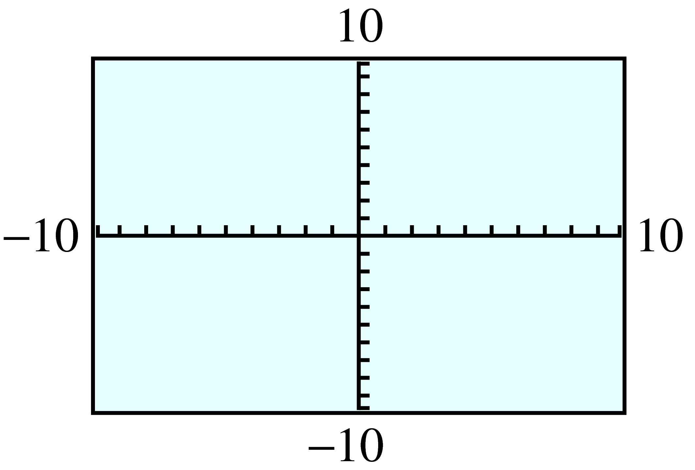
-
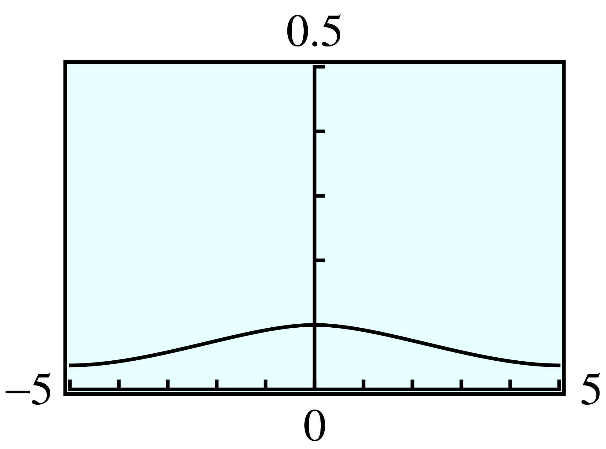
The curve cannot be distinguished from the \(x\)-axis in the standard window because the values of \(y\) are closer to zero than the resolution of the calculator can display. The second window provides sufficient resolution to see the curve.
38.
\(H(x) =\sqrt{1-x^2} \)
39.
\(P(x) = (x - 8)(x + 6)(x - 15)\)
- 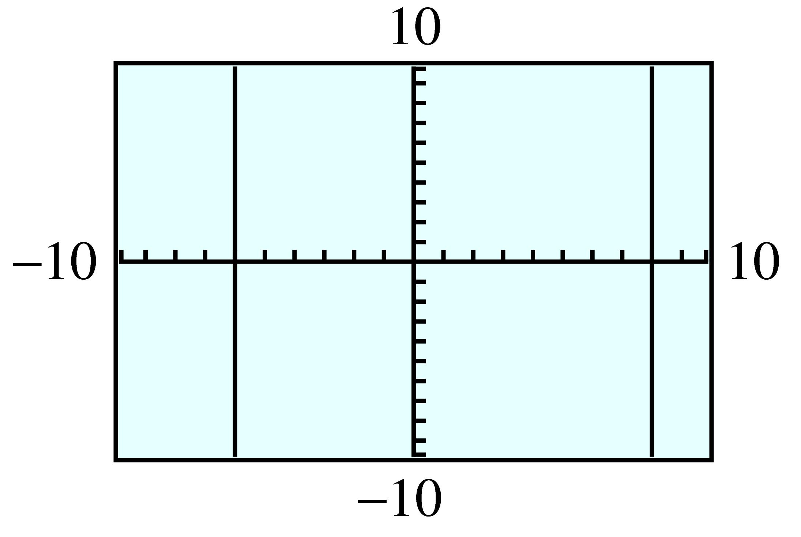
-
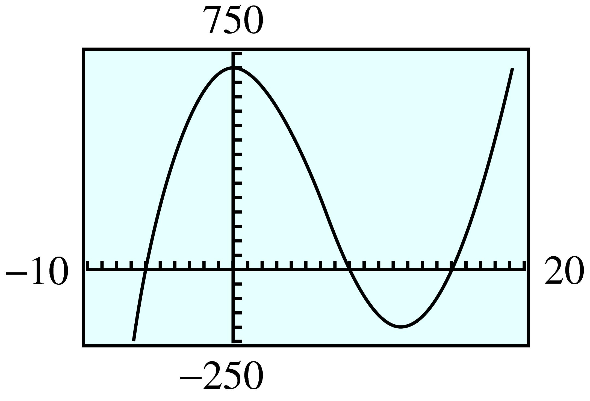
The curve looks like two vertical lines in the standard window because that window covers too small a region of the plane. The second window allows us to see the turning points of the curve.
40.
\(p(x) = 200x^3\)
For Problems 41–44, graph the equation with the ZInteger setting. (Press ZOOM \(6\text{,}\)then ZOOM \(8\) ENTER.) Use the graph to answer each question. Use the equation to verify your answers.
41.
Graph \(y = 2x - 3\)
For what value of \(x\) is \(y = 5\text{?}\)
For what value of \(x\) is \(y = -13\text{?}\)
For what values of \(x\) is \(y\gt -1 \text{?}\)
For what values of \(x\) is \(y\lt 25\text{?}\)
\(x = 4\)
\(x = -5\)
\(x\gt 1\)
\(x\lt 14 \)
42.
Graph \(y = 4 - 2x\)
For what value of \(x\) is \(y = 6\text{?}\)
For what value of \(x\) is \(y = -4\text{?}\)
For what values of \(x\) is \(y\gt -12 \text{?}\)
For what values of \(x\) is \(y\lt 18\text{?}\)
43.
Graph \(y = 6.5 - 1.8x\)
For what value of \(x\) is \(y = -13.3\text{?}\)
For what value of \(x\) is \(y = 24.5\text{?}\)
For what values of \(x\) is \(y\le 15.5 \text{?}\)
For what values of \(x\) is \(y\ge -7.9\text{?}\)
\(x = 11\)
\(x = -10\)
\(x\ge -5\)
\(x\le 8 \)
44.
Graph \(y = 0.2x + 1.4\)
For what value of \(x\) is \(y = -5.2\text{?}\)
For what value of \(x\) is \(y = 2.8\text{?}\)
For what values of \(x\) is \(y\le -3.2 \text{?}\)
For what values of \(x\) is \(y\ge 4.4\text{?}\)
For Problems 45–48, graph the equation with the ZInteger setting. Use the graph to solve each equation or inequality. Check your solutions algebraically.
45.
Graph \(y = -0.4x + 3.7\)
Solve \(-0.4x + 3.7 = 2.1\)
Solve \(-0.4x + 3.7\gt -5.1\)
\(x = 4 \)
\(x\lt 22 \)
46.
Graph \(y = 0.4 (x - 1.5)\)
Solve \(0.4 (x - 1.5) = -8.6\)
Solve \(0.4 (x - 1.5)\lt 8.6\)
47.
Graph \(y = \dfrac{2}{3}x - 24\)
Solve \(\dfrac{2}{3}x - 24 = -10\dfrac{2}{3} \)
Solve \(\dfrac{2}{3}x - 24\le -19\dfrac{1}{3} \)
\(x = 20 \)
\(x\le 7 \)
48.
Graph \(y = \dfrac{80 - 3x}{5}\text{.}\)
Solve \(\dfrac{80 - 3x}{5} = 22\dfrac{3}{5} \text{.}\)
Solve \(\dfrac{80 - 3x}{5}\le -9\dfrac{2}{5} \text{.}\)
49.
Graph \(y = 0.01x^3 - 0.1x^2 - 2.75x + 15\text{.}\)
Use your graph to solve \(0.01x^3 - 0.1x^2 - 2.75x + 15 = 0\text{.}\)
-
Press
Y=and enter \(Y_2 = 10\text{.}\) PressGRAPH, and you should see the horizontal line \(y = 10\) superimposed on your previous graph. How many solutions does the equation\begin{equation*} 0.01x^3 - 0.1x^2 - 2.75x + 15 = 10 \end{equation*}have? Estimate each solution to the nearest whole number.
\(-15, 5, 20 \)
\(-13, 2, 22 \)
50.
Graph \(y = 2.5x - 0.025x^2 - 0.005x^3\text{.}\)
Use your graph to solve \(2.5x - 0.025x^2 - 0.005x^3 = 0\text{.}\)
-
Press
Y=and enter \(Y_2 = -5\text{.}\) PressGRAPH, and you should see the horizontal line \(y = -5\) superimposed on your previous graph. How many solutions does the equation\begin{equation*} 2.5x - 0.025x^2 - 0.005x^3 = -5 \end{equation*}have? Estimate each solution to the nearest whole number.
Exercises 1.4 Homework 1.4
¶Compute ratios to answer the questions in Problems 1–4.
1.
Carl runs \(100\) meters in \(10\) seconds. Anthony runs \(200\) meters in \(19.6\) seconds. Who has the faster average speed?
Anthony
2.
On his \(512\)-mile round trip to Las Vegas and back, Corey needed \(16\) gallons of gasoline. He used \(13\) gallons of gasoline on a \(429\)-mile trip to Los Angeles. On which trip did he get better fuel economy?
3.
Grimy Gulch Pass rises \(0.6\) miles over a horizontal distance of \(26\) miles. Bob's driveway rises \(12\) feet over a horizontal distance of \(150\) feet. Which is steeper?
Bob's driveway
4.
Which is steeper, the truck ramp for Acme Movers, which rises \(4\) feet over a horizontal distance of \(9\) feet, or a toy truck ramp, which rises \(3\) centimeters over a horizontal distance of \(7\) centimeters?
In Problems 5-8, compute the slope of the line through the indicated points. On both axes, one square represents one unit.


For Problems 9–14,
Graph each line by the intercept method.
Use the intercepts to compute the slope.


15.
Use the points \((0, 2)\) and \((4, 8)\) to compute the slope of the line. Illustrate \(\Delta y\) and \(\Delta x\) on the graph.
Use the points \((-4, -4)\) and \((4, 8)\) to compute the slope of the line. Illustrate \(\Delta y\) and \(\Delta x\) on the graph.
Use the points \((0, 2)\) and \((-6, -7)\) to compute the slope of the line. Illustrate \(\Delta y\) and \(\Delta x\) on the graph.

- 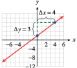
- 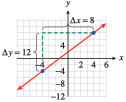

16.
Use the points \((0, -6)\) and \((8, -12)\) to compute the slope of the line. Illustrate \(\Delta y\) and \(\Delta x\) on the graph.
Use the points \((-8, 0)\) and \((4, -9)\) to compute the slope of the line. Illustrate \(\Delta y\) and \(\Delta x\) on the graph.
Use the points \((4, -9)\) and \((0, -6)\) to compute the slope of the line. Illustrate \(\Delta y\) and \(\Delta x\) on the graph.

For Problems 17–20, use the formula \(m=\dfrac{\Delta y}{\Delta x} \)
17.
A line has slope \(\dfrac{-3}{4}\text{.}\)
-
Find the vertical change associated with each horizontal change along the line.
\(\Delta x = 4\)
\(\Delta x = -8\)
\(\Delta x = 2\)
\(\Delta x = -6\)
-
Find the horizontal change associated with each vertical change along the line.
\(\Delta y = 3\)
\(\Delta y = -6\)
\(\Delta y = -2\)
\(\Delta y = 1\)
\(-3\)
\(6\)
\(\dfrac{-3}{2} \)
\(\dfrac{9}{2}\)
\(-4\)
\(8\)
\(\dfrac{8}{3} \)
\(\dfrac{4}{3}\)
18.
A line has slope \(\dfrac{5}{3}\text{.}\)
-
Find the vertical change associated with each horizontal change along the line.
\(\Delta x = 3\)
\(\Delta x = -6\)
\(\Delta x = 1\)
\(\Delta x = -24\)
-
Find the horizontal change associated with each vertical change along the line.
\(\Delta y = -5\)
\(\Delta y = -2.5\)
\(\Delta y = -1\)
\(\Delta y = 3\)
19.
Residential staircases are usually built with a slope of \(70\%\text{,}\) or \(\dfrac{7}{10}\text{.}\) If the vertical distance between stories is \(10\) feet, how much horizontal space does the staircase require?
\(\dfrac{100}{7}\) ft \(\approx 14.286\) ft \(\approx 14\) ft \(~3.4\) in
20.
A straight section of highway in the Midwest maintains a grade (slope) of \(4\%\text{,}\) or \(\dfrac{1}{25}\text{,}\) for \(12\) miles. How much does your elevation change as you travel the road?
21.
Choose the line with the correct slope. The scales are the same on both axes.
\(m=2\)
\(m=-\dfrac{1}{2} \)
\(m=\dfrac{2}{3} \)
\(m=-\dfrac{5}{3} \)

IV
III
II
I
22.
Choose the line with the correct slope. The scales are the same on both axes.
\(0\lt m \lt 1\)
\(m \lt -1\)
\(m= \gt 1 \)
\(m=0 \)

Compute the slope of the line in Problems 23-26. Note the scales on the axes.


Each table in Problems 27–30 gives the coordinates of points on a line.
Find the slope of the line.
Fill in the missing table entries.
27.
| \(x\) | \(y\) |
| \(-4\) | \(-14\) |
| \(-2\) | \(-9\) |
| \(2\) | \(1\) |
| \(3\) | \(\) |
| \(\) | \(11\) |
\(\dfrac{5}{2} \)
\(x\) \(y\) \(3\) \(\frac{7}{2}\) \(6\) \(11\)
28.
| \(x\) | \(y\) |
| \(-5\) | \(-3.8\) |
| \(-1\) | \(-0.6\) |
| \(2\) | \(1.8\) |
| \(\) | \(4.2\) |
| \(7\) | \(\) |
29.
| \(x\) | \(y\) |
| \(-3\) | \(36\) |
| \(-1\) | \(\) |
| \(\) | \(12\) |
| \(6\) | \(9\) |
| \(10\) | \(-3\) |
\(-3 \)
\(x\) \(y\) \(-1\) \(\alert{30}\) \(\alert{5}\) \(12\)
30.
| \(x\) | \(y\) |
| \(-10\) | \(800\) |
| \(-2\) | \(\) |
| \(5\) | \(440\) |
| \(\) | \(368\) |
| \(16\) | \(176\) |
31.
A temporary typist's paycheck (before deductions) is given, in dollars, by \(S = 8t\text{,}\) where \(t\) is the number of hours she worked.
-
Make a table of values for the function.
\(t\) \(4\) \(8\) \(20\) \(40\) \(S\) \(\hphantom{0000} \) \(\hphantom{0000}\) \(\hphantom{0000}\) \(\hphantom{0000}\) Graph the function.
Using two points on the graph, compute the slope \(\dfrac{\Delta S}{\Delta t}\text{,}\) including units.
What does the slope tell us about the typist's paycheck?
\(t\) \(4\) \(8\) \(20\) \(40\) \(S\) \(32 \) \(64\) \(160\) \(320\) 
8 dollars/hour
The typist is paid $\(8\) per hour.
32.
The distance (in miles) covered by a cross-country competitor is given by \(d = 6t\text{,}\) where \(t\) is the number of hours she runs.
-
Make a table of values for the function.
\(t\) \(2\) \(4\) \(6\) \(8\) \(d\) \(\hphantom{0000} \) \(\hphantom{0000}\) \(\hphantom{0000}\) \(\hphantom{0000}\) Graph the function.
Using two points on the graph, compute the slope \(\dfrac{\Delta d}{\Delta t}\text{,}\) including units.
What does the slope tell us about the cross-country runner?
In Problems 33–40,
Choose two points and compute the slope of the graph (including units).
Explain what the slope measures in the context of the problem.
33.
The graph shows the number of barrels of oil, \(B\text{,}\) that has been pumped at a drill site \(t\) days after a new drill is installed.

\(1250\) barrels/day
The slope indicates that oil is pumped at a rate of \(1250\) barrels per day.
34.
The graph shows the amount of garbage, \(G\) (in tons), that has been deposited at a dump site \(t\) years after new regulations go into effect.

35.
The graph shows the amount of emergency water, \(W\) (in liters), remaining in a southern California household \(t\) days after an earthquake.

\(-6\) liters/day
The slope indicates that the water is diminishing at a rate of \(6\) liters per day.
36.
The graph shows the amount of money, \(M\) (in dollars), in Tammy's bank account \(w\) weeks after she loses all sources of income.
37.
The graph shows the length in inches, \(i\text{,}\) corresponding to various lengths in feet \(f\text{.}\)

\(12\) inches/foot
The slope gives the conversion rate of 12 inches per foot.
38.
The graph shows the number of ounces, \(z\text{,}\) that correspond to various weights measured in pounds, \(p\text{.}\)

39.
The graph shows the cost, \(C\) (in dollars), of coffee beans in terms of the amount of coffee, \(b\) (in kilograms).

\(4\) dollars/kilogram
The slope gives the unit price of \(\$4\) per kilogram
40.
The graph shows Tracey's earnings, \(E\) (in dollars), in terms of the number of hours, \(h\text{,}\) that she babysits.

Which of the tables in Problems 41 and 42 represent variables that are related by a linear function? (Hint: Which relationships have constant slope?)
41.
\(x\) \(y\) \(2\) \(12\) \(3\) \(17\) \(4\) \(22\) \(5\) \(27\) \(6\) \(32\) \(t\) \(P\) \(2\) \(4\) \(3\) \(9\) \(4\) \(16\) \(5\) \(25\) \(6\) \(36\)
(a)
42.
\(h\) \(w\) \(-6\) \(20\) \(-3\) \(18\) \(0\) \(16\) \(3\) \(14\) \(6\) \(12\) \(t\) \(d\) \(5\) \(0\) \(10\) \(3\) \(15\) \(6\) \(20\) \(12\) \(25\) \(24\)
43.
The table shows the amount of ammonium chloride salt, in grams, that can be dissolved in 100 grams of water at different temperatures.
| Temperature,\(\degree\)C | \(10\) | \(12\) | \(15\) | \(21\) | \(25\) | \(40\) | \(52\) |
| Grams of salt | \(33 \) | \(34\) | \(35.5\) | \(38.5\) | \(40.5\) | \(48\) | \(54\) |
If you plot the data, will the points lie on a straight line? Why or why not?
Calculate the rate of change of salt dissolved with respect to temperature.
Yes, the slope between any two points is \(\frac{1}{2}\text{.}\)
\(0.5\) grams of salt per degree Celsius
44.
A spring is suspended from the ceiling. The table shows the length of the spring, in centimeters, as it is stretched by hanging various weights from it.
| Weight, kg | \(3\) | \(4\) | \(8\) | \(10\) | \(12\) | \(15\) | \(22\) |
| Length, cm | \(25.87 \) | \(25.88\) | \(26.36\) | \(26.6\) | \(26.84\) | \(27.2\) | \(28.04\) |
If you plot the data, will the points lie on a straight line? Why or why not?
Calculate the rate of change of length with respect to weight.
45.
The table gives the radius and circumference of various circles, rounded to three decimal places.
| \(r\) | \(C\) |
| \(4\) | \(25.133\) |
| \(6\) | \(37.699\) |
| \(10\) | \(62.832\) |
| \(15\) | \(94.248\) |
If we plot the data, will the points lie on a straight line?
What familiar number does the slope turn out to be? (Hint: Recall a formula from geometry.)
Yes
\(2\pi\)
46.
The table gives the side and the diagonal of various squares, rounded to three decimal places.
| \(s\) | \(d\) |
| \(3\) | \(4.243\) |
| \(6\) | \(8.485\) |
| \(8\) | \(11.314\) |
| \(10\) | \(14.142\) |
If we plot the data, will the points lie on a straight line?
What familiar number does the slope turn out to be? (Hint: Draw a picture of one of the squares and use the Pythagorean theorem to compute its diagonal.)
47.
Geologists can measure the depth of the ocean at different points using a technique called echo-sounding. Scientists on board a ship send a pulse of sound toward the ocean floor and measure the time interval until the echo returns to the ship. The speed of sound in seawater is about \(1500\) meters per second.
Write the speed of sound as a ratio.
If the echo returns in \(4.5\) seconds, what is the depth of the ocean at that point?
\(\dfrac{1500\text{ meters}}{1 \text{ second}} \)
\(3375\) meters
48.
Niagara Falls was discovered by Father Louis Hennepin in 1682. In 1952, much of the water of the Niagara River was diverted for hydroelectric power, but until that time erosion caused the Falls to recede upstream by \(3\) feet per year.
How far did the Falls recede from 1682 to 1952?
The Falls were formed about \(12,000\) years ago during the end of the last ice age. How far downstream from their current position were they then? (Give your answer in miles.)
49.
Geologists calculate the speed of seismic waves by plotting the travel times for waves to reach seismometers at known distances from the epicenter. The speed of the wave can help them determine the nature of the material it passes through. The graph shows a travel-time graph for P-waves from a shallow earthquake.
Why do you think the graph is plotted with distance as the input variable?
Use the graph to calculate the speed of the wave.
The distances are known.
\(5.7\) km per second
50.
Energy (supplied by heat) is required to raise the temperature of a substance, and it is also needed to melt a solid substance to a liquid. The table shows data from heating a solid sample of stearic acid. Heat was applied at a constant rate throughout the experiment. (Source: J. A. Hunt and A. Sykes, 1984)
| Time (minutes | \(0\) | \(0.5\) | \(1.5\) | \(2\) | \(2.5\) | \(3\) | \(4\) | \(5\) | \(6\) | \(7\) | \(8\) | \(8.5\) | \(9\) | \(9.5\) | \(10\) |
| Temperature, \(\degree\)C | \(19 \) | \(29\) | \(40\) | \(48\) | \(53\) | \(55\) | \(55\) | \(55 \) | \(55\) | \(55\) | \(55\) | \(64\) | \(70\) | \(73\) | \(74\) |
Did the temperature rise at a constant rate? Describe the temperature as a function of time.
Graph temperature as a function of time.
What is the melting point of stearic acid? How long did it take the sample to melt?
51.
The graph shows the temperature of the ocean as a function of depth.
What is the difference in temperature between the surface of the ocean and the deepest level shown?
Over what depths does the temperature change most rapidly?
What is the average rate of change of temperature with respect to depth in the region called the thermocline?
About \(18\degree\)C
0.3 km to 0.4 km
About \(-28\degree\)C per kilometer
52.
The graph shows the average air temperature as a function of altitude. (Figure (b) is an enlargement of the indicated region of Figure (a).) (Source: Ahrens, 1998)
Is temperature a decreasing function of altitude?
The lapse rate is the rate at which the temperature changes with altitude. In which regions of the atmosphere is the lapse rate positive?
The region where the lapse rate is zero is called the isothermal zone. Give an interval of altitudes that describes the isothermal zone.
What is the lapse rate in the mesosphere?
Describe the temperature for altitudes greater than 90 kilometers.
In Problems 53–56, evaluate the function at \(x = a\) and \(x = b\text{,}\) and then find the slope of the line segment joining the two corresponding points on the graph. Illustrate the line segment on a graph of the function.


In Problems 57–62, find the coordinates of the indicated points, then write an algebraic expression using function notation for the indicated quantity.
57.
The length of the vertical line segment on the \(y\)-axis


\((1,F(1)),(4,F(4))\text{;}\) \(~~~~F(4) - F(1)\)
\((r,f(r)),(s,f(s))\text{;}\) \(~~~~f(s) - f(r)\)
58.
The length of the vertical line segment on the \(y\)-axis
- 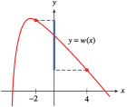

59.
-
The increase in \(y\) as \(x\) increases from \(2\) to \(3\)
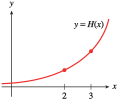 -
The increase in \(y\) as \(x\) increases from \(a\) to \(b\)

\((2,H(2)),(3,H(3))\text{;}\) \(~~~~H(3) - H(2)\)
\((a,g(a)),(b,g(b))\text{;}\) \(~~~~g(b) - g(a)\)
60.
-
The increase in \(y\) as \(x\) increases from \(-4\) to \(-1\)
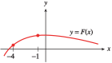 -
The increase in \(y\) as \(x\) increases from \(u\) to \(v\)

61.
The shaded area
- 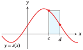

\((c,s(c)),(d,s(d))\text{;}\) \(~~~~s(c)(d - c)\)
\((x_1,q(x_1)),(x_2,q(x_2))\text{;}\) \(~~~~q(x_2)(x_2 - x_1)\)
62.
The shaded area
- 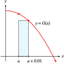

In Problems 63–66, find the coordinates of the indicated points on the graph of \(y = f (x)\) and write an algebraic expression using function notation for the slope of the line segment joining points \(P\) and \(Q\text{.}\)
63.

- 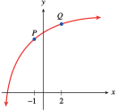
\((1, f (1)), (5, f (5))\text{;}\) \(~~~~\dfrac{f (5) - f (1)}{4}\)
\((-1, f (-1)), (2, f (2))\text{;}\) \(~~~~\dfrac{f (2) - f (-1)}{3}\)
64.


65.
- 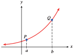

\((a, f (a)), (b, f (b))\text{;}\) \(~~~~\dfrac{f(b) - f(a)}{b-a}\)
\((a, f (a)), (a+\Delta x, f(a+\Delta x))\text{;}\) \(~~~~\dfrac{f(a+\Delta x) - f(a)}{\Delta x}\)
66.


Exercises 1.5 Homework 1.5
¶In Problems 1–10,
Write each equation in slope-intercept form.
State the slope and \(y\)-intercept of the line.
1.
\(3x + 2y = 1\)
\(y = \dfrac{1}{2}- \dfrac{3}{2}x\)
Slope \(\dfrac{-3}{2}\text{,}\) \(y\)-intercept \(\dfrac{1}{2} \)
2.
\(5x - 4y = 0\)
3.
\(\dfrac{1}{4}x + \dfrac{3}{2}y = \dfrac{1}{6}\)
\(y = \dfrac{1}{9}- \dfrac{1}{6}x\)
Slope \(\dfrac{-1}{6}\text{,}\) \(y\)-intercept \(\dfrac{1}{9} \)
4.
\(\dfrac{7}{6}x - \dfrac{2}{9}y = 3\)
5.
\(4.2x - 0.3y = 6.6\)
\(y = -22 + 14x\)
Slope \(14\text{,}\) \(y\)-intercept \(-22 \)
6.
\(0.8x + 0.004y = 0.24\)
7.
\(y + 29 = 0\)
\(y = -29\)
Slope \(0\text{,}\) \(y\)-intercept \(-29 \)
8.
\(y - 37 = 0\)
9.
\(250x + 150y = 2450\)
\(y =\dfrac{49}{3}-\dfrac{5}{3}x \)
Slope \(\dfrac{-5}{3}\text{,}\) \(y\)-intercept \(\dfrac{49}{3} \)
10.
\(80x - 360y = 6120\)
In Problems 11–14,
Sketch by hand the graph of the line with the given slope and \(y\)-intercept.
Write an equation for the line.
Find the \(x\)-intercept of the line.


15.
The point \((2, -1)\) lies on the graph of \(f (x) = -3x + b\text{.}\) Find \(b\text{.}\)
\(5\)
16.
The point \((-3, -8)\) lies on the graph of \(f (x) =\dfrac{2}{3} x + b\text{.}\) Find \(b\text{.}\)
17.
The point \((8, -5)\) lies on the graph of \(f(x) = mx - 3\text{.}\) Find \(m\text{.}\)
\(\dfrac{-1}{4} \)
18.
The point \((-5, -6)\) lies on the graph of \(f(x) = mx +2\text{.}\) Find \(m\text{.}\)
19.
Find the slope and intercepts of the line \(Ax + By = C\)
\(m =\dfrac{-A}{B}\text{,}\) \(x\)-intercept \(\left(\dfrac{C}{A},0\right) \text{,}\) \(y\)-intercept \(\left(0,\dfrac{C}{B}\right) \)
20.
Find the slope and intercepts of the line \(\dfrac{x}{a}+\dfrac{y}{b}=1 \)
In Problems 21–26,
Find a formula for the function whose graph is shown.
Say what the slope and the vertical intercept tell us about the problem.
21.
The graph shows the altitude, \(a\) (in feet), of a skier \(t\) minutes after getting on a ski lift.

\(a = 100 + 150t\)
The slope tells us that the skier's altitude is increasing at a rate of \(150\) feet per minute, the vertical intercept that the skier began at an altitude of \(200\) feet.
22.
The graph shows the distance, \(d\) (in meters), traveled by a train \(t\) seconds after it passes an observer.
23.
The graph shows the amount of garbage, \(G\) (in tons), that has been deposited at a dump site \(t\) years after new regulations go into effect.

\(G = 25 + 12.5t\)
The slope tells us that the garbage is increasing at a rate of \(12.5\) tons per year, the vertical intercept that the dump already had \(25\) tons (when the new regulations went into effect).
24.
The graph shows the number of barrels of oil, \(B\text{,}\) that has been pumped at a drill site \(t\) days after a new drill is installed.

25.
The graph shows the amount of money, \(M\) (in dollars), in Tammy’s bank account \(w\) weeks after she loses all sources of income.

\(M = 7000 - 400w\)
The slope tells us that Tammy's bank account is diminishing at a rate of $\(400\) per week, the vertical intercept that she had $\(7000\) (when she lost all sources of income).
26.
The graph shows the amount of emergency water, \(W\) (in liters), remaining in a southern California household \(t\) days after an earthquake.
27.
The formula \(F = \dfrac{9}{5}C + 32\) defines a function that converts the temperature in degrees Celsius to degrees Fahrenheit.
What is the Fahrenheit temperature when it is \(10\degree\) Celsius?
What is the Celsius temperature when it is \(-4\degree\) Fahrenheit?
Choose appropriate
WINDOWsettings and graph the equation \(y = \dfrac{9}{5}x + 32\text{.}\)Find the slope and explain its meaning for this problem.
Find the intercepts and explain their meanings for this problem.
\(50\degree\)F
\(-20\degree\)C

The slope, \(\frac{9}{5} = 1.8\text{,}\) tells us that Fahrenheit temperatures increase by \(1.8\degree\) for each increase of \(1\degree\) Celsius.
\(C\)-intercept \(\left(-17\frac{7}{9}, 0\right)\text{:}\) \(-17\frac{7}{9}\degree\) C is the same as \(0\degree\)F; \(F\)-intercept \((0, 32)\text{:}\) \(0\degree\)C is the same as \(32\degree\)F.
28.
If the temperature on the ground is \(70\degree\) Fahrenheit, the formula \(T = 70 - \dfrac{3}{820}h\) defines a function that gives the temperature at an altitude of \(h\) feet.
What is the temperature at an altitude of \(4100\) feet?
At what altitude is the temperature \(34\degree\) Fahrenheit?
Choose appropriate
WINDOWsettings and graph the equation \(y = 70- \dfrac{3}{820}x\text{.}\)Find the slope and explain its meaning for this problem.
Find the intercepts and explain their meanings for this problem.
29.
In England, oven cooking temperatures are often given as Gas Marks rather than degrees Fahrenheit. The table shows the equivalent oven temperatures for various Gas Marks.
| Gas Mark | \(3\) | \(5\) | \(7\) | \(9\) |
| Degrees (F) | \(325\) | \(375\) | \(425\) | \(475\) |
Plot the data and draw a line through the data points.
Calculate the slope of your line. Estimate the \(y\)-intercept from the graph.
Find an equation that gives the temperature in degrees Fahrenheit in terms of the Gas Mark.
- 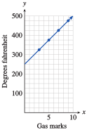
\(m = 25, ~b = 250\)
\(y = 250 + 25x\)
30.
European shoe sizes are scaled differently than American shoe sizes. The table shows the European equivalents for various American shoe sizes.
| American shoe size | \(5.5\) | \(6.5\) | \(7.5\) | \(8.5\) |
| European shoe size | \(37\) | \(38\) | \(39\) | \(40\) |
Plot the data and draw a line through the data points.
Calculate the slope of your line. Estimate the \(y\)-intercept from the graph.
Find an equation that gives the European shoe size in terms of American shoe size.
31.
A spring is suspended from the ceiling. The table shows the length of the spring in centimeters as it is stretched by hanging various weights from it.
| Weight, kg | \(3\) | \(4\) | \(8\) | \(10\) | \(12\) | \(15\) | \(22\) |
| Length, cm | \(25.76\) | \(25.88\) | \(26.36\) | \(26.6\) | \(26.84\) | \(27.2\) | \(28.04\) |
Plot the data on graph paper and draw a straight line through the points. Estimate the \(y\)-intercept of your graph.
Find an equation for the line.
If the spring is stretched to \(27.56\) cm, how heavy is the attached weight?

\(y = 0.12x + 25.4\)
\(18\) kg
32.
The table shows the amount of ammonium chloride salt, in grams, that can be dissolved in \(100\) grams of water at different temperatures.
| Temperature, \(\degree\)C | \(10\) | \(12\) | \(15\) | \(21\) | \(25\) | \(40\) | \(52\) |
| Grams of salt | \(33\) | \(34\) | \(35.5\) | \(38.5\) | \(40.5\) | \(48\) | \(54\) |
Plot the data on graph paper and draw a straight line through the points. Estimate the \(y\)-intercept of your graph.
Find an equation for the line.
At what temperature will \(46\) grams of salt dissolve?
In Problems 33–36,
Sketch by hand the graph of the line that passes through the given point and has the given slope.
Write an equation for the line in point-slope form.
Put your equation from part (b) into slope-intercept form.

For Problems 37–40,
Write an equation in point-slope form for the line that passes through the given point and has the given slope.
Put your equation from part (a) into slope-intercept form.
Use your graphing calculator to graph the line.

For Problems 41 and 42,
Find the slope of the line. (Note that not all the labeled points lie on the line.)
Find an equation for the line.
41.
\(m =\dfrac{2}{3}\)
\(y=\dfrac{-1}{3}+ \dfrac{2}{3}x\)
42.

For Problems 43 and 44, the equation of line \(l_1\) is \(y = q + px\text{,}\) and the equation of line \(l_2\) is \(y = v + tx\text{.}\)
-
Decide whether the coordinates of each labeled point are
a solution of \(y = q + px\text{,}\)
a solution of \(y = v + tx\text{,}\)
a solution of both equations, or
a solution of neither equation.
Find \(p\text{,}\) \(q\text{,}\) \(t\text{,}\) and \(v\text{.}\)
43.

\((-4, 4)\text{:}\) neither; \((0, 3)\text{:}\) \(y = px + q\text{;}\) \((3, 2)\text{:}\) both; \((2, 1)\text{:}\) neither; \((1,-2)\text{:}\) \(y = tx + v\)
\(p =\dfrac{-1}{3}\text{,}\) \(q = 3\text{,}\) \(t = 2\text{,}\) \(v = -4\)
44.

For Problems 45–50,
Estimate the slope and vertical intercept of each line. (Hint: To calculate the slope, find two points on the graph that lie on the intersection of grid lines.)
Using your estimates from (a), write an equation for the line.


51.
Write equations for three lines with slope \(m = \dfrac{3}{4}\text{.}\) (Many answers are possible.)
Graph all three lines in the same window. What do you notice about the lines?
\(y = \dfrac{3}{4}x\text{,}\) \(y = 1 + \dfrac{3}{4}x\text{,}\) \(y = -2.7 + \dfrac{3}{4}x\)
-

The lines are parallel.
52.
Write equations for three lines with slope \(m =0\text{.}\) (Many answers are possible.)
Graph all three lines in the same window. What do you notice about the lines?
In Problems 53–56, choose the correct graph for each equation. The scales on both axes are the same.
53.
\(y = \dfrac{3}{4}x + 2\)
\(y = \dfrac{-3}{4}x + 2\)
\(y = \dfrac{3}{4}x - 2 \)
\(y =\dfrac{-3}{4}x - 2\)

II
III
I
IV
54.
\(m\lt 0\text{,}\) \(b\gt 0\)
\(m\gt 1\text{,}\) \(b\lt 0\)
\(0\lt m\lt 1\text{,}\) \(b\lt 0\)
\(m\lt -1\text{,}\) \(b\lt 0 \)

55.
\(y = 1 + 2(x+3) \)
\(y = -1 + 2(x-3)\)
\(y = -1 + 2(x+3) \)
\(y = 1 + 2(x-3) \)
III
IV
II
I
56.
\(y = 2 - \dfrac{2}{3}(x - 3) \)
\(y = 2 - \dfrac{3}{2}(x + 3) \)
\(y = 2 + \dfrac{3}{2}(x - 3) \)
\(y = 2 + \dfrac{2}{3}(x + 3) \)

In Problems 57–60, find the slope of each line and the coordinates of one point on the line. (No calculation is necessary!)
61.
-
Draw a set of coordinate axes with a square grid (i.e., with units the same size in both directions). Sketch four lines through the point (0, 4) with the following slopes:
\begin{equation*} m = 3, ~~~ m = -3,~~~ m = \frac{1}{3}, ~~~ m =\frac{-1}{3} \end{equation*} What do you notice about these lines?

62.
-
Draw a set of coordinate axes with a square grid (see Problem 61). Sketch four lines through the point (0, -3) with the following slopes:
\begin{equation*} m = \frac{2}{5}, ~~~ m = \frac{-2}{5},~~~ m = \frac{5}{2}, ~~~ m =\frac{-5}{2} \end{equation*} What do you notice about these lines?
63.
The boiling point of water changes with altitude and is approximated by the formula
where \(B\) is in degrees and \(h\) is in feet. State the slope and vertical intercept of the graph, including units, and explain their meaning in this context.
\(m = -0.0018\) degree/foot, so the boiling point drops with altitude at a rate of \(0.0018\) degree per foot. \(b = 212\text{,}\) so the boiling point is \(212\degree\) at sea level (where the elevation \(h = 0\)).
64.
The height of a woman in centimeters is related to the length of her femur (in centimeters) by the formula
State the slope and the vertical intercept of the graph, including units, and explain their meaning in this context.